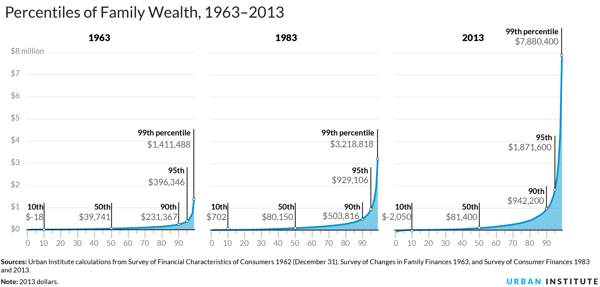

Sources: Urban Institute calculations from Survey of Financial Characteristics of Consumers 1962 (December 31), Survey of Changes in Family Finances 1963, and Survey of Consumer Finances 1983–2016.
Notes: 2016 dollars. No comparable data are available between 1963 and 1983.